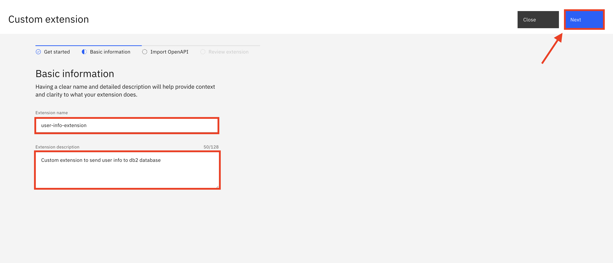

Connecting watsonx Assistant to External Database
Integrating with data source services on Microsoft Azure
Please refer to the following link.
Integrating with Db2 Database (example)
Retrieve Database Service Credentials
First, you will need to retrieve service credentials from your Db2 instance. Go to your Db2 instance, select the Service credentials page, and click on the New credential button in the top right.

Name your credentials as you like, select Manager as the role, and click Add.
Credentials to Note
You will need some of the credentials that you've just created later on in the article. Open up the service credentials and note the database, hostname, port, username, and password.
Create Table in Db2
Navigate to the Manage section from the menu on the left and click on the Go to UI button.

Click on the SQL tab and paste the SQL statement from below. Click Run all.

Table Info
This statement creates a table called USER_INFO with 3 columns: NAME, EMAIL, and ADDRESS.
Next, navigate to the Data tab from the left hand menu. From there, select Tables from the menu on top and select the available schema. You should see the USER_INFO table and when you click on that you should see the table definition with the columns listed as well. Once we send data to the database, you will be able to view the data by coming back to this page and clicking the View data button.
Host a Public Endpoint for Code Snippet
We will need code for the actual action to send our data to the database and an endpoint for our watsonx Assistant to hit. Use a tool that hosts your code and exposes a public endpoint. You can use the code from below. Make sure to update your database credentials on lines 7-11 and the schema on line 28.
This action takes 3 parameters - name, email, and address - and sends them to the database.
Once you've saved this code snippet and found the public endpoint, take note of the endpoint as we will need this for later.
Create OpenAPI Document
An OpenAPI document describes an API in terms of paths and operations. In OpenAPI terms, paths are endpoints (resources), such as a hotel reservation or a customer record, that your API exposes, and operations are the HTTP methods used to manipulate these paths, such as GET, POST, or DELETE.
You can use the Swagger Editor to create and modify your OpenAPI document.
You can use the following block of sample OpenAPI document in your Swagger Editor. I have provided it in a .json format since watsonx Assistant requires an OpenAPI document in .json format to build a custom integration.
Make sure to update the url (line 10) and the path (line 15) to match the endpoint you noted from the previous step.
Request Body Properties
For the requestBody section (starting on line 21), you can see that there are 3 properties defined here
- name: a string (line 28)
- email: a string (line 32)
- address: a string (line 36)
They are required parameters that the user will input when they interact with watsonx Assistant.
Integrating Custom Extenstion in watsonx Assistant
Go to your watsonx Assistant instance. Navigate to the Integrations tab from the menu on the left-hand side of the page.
From the integrations page, scroll down to the Extensions section and click on the Build custom extension button.
On the Get started screen, click the Next button in the top right corner of the screen to get to the Basic information section. Name your extension, give it a description, and click Next.

On the next page, upload the OpenAPI file you created from the previous steps.
Click Finish in the top right corner.
You will see that the extension you just built is now under the Extensions section. Click on Add on the bottom right corner of the tile. On the next pop-up screen, click the Add button.

On the Get started screen, click on Next in the top right corner to get to the next screen. Make sure your server is correct, and click on Next.
On the Review operations screen, click on Finish to have the extension added to your Assistant.
Create Action in watsonx Assistant
Now that we've created the extension, let's go and create the action that will use this extension to send the user info variables from watsonx Assistant to the database.
First, we'll want to create the variables that we need to send over to store in the database: name, email, and address.
To create variables, we'll need to go to Created by you under Variables.

Click on New variable in the top right corner to create our first variable.
Fill in the Name and select the Type as well for our name variable that is going to be accepted as Free text. Click Save to create the variable.
Now, repeat this step 2 times but for the other variables that we need: email and address.


Now, navigate back to the action page.

Click on New action in the top right corner to create our action. Select Start from scratch for how we want to build our action.
In the following pop up box, regarding how to start the interaction, we can enter "user info" as the input the user would type to begin this interaction. This prompt to start the interaction can be changed later on as well. Click Save.

Click on Step 1, in this step we would ask the user what the user's name is under Assistant says. Names should be accepted as free text (string), so click on Define customer response and select Free text from the list.

Use the blue New step button to create the second step. Before the Assistant does anything in the second step, we should make sure it collects the users response for what the user's name is from the previous step. Click on Set variable values in the top right corner, Set new value, and click on Session variables.
Under Session variables, choose name from the list, and in the To field, click on Action variables and select the question you asked the user in the first step.

Now that we have saved the users name as a variable, we also want to know what their email is. Under Assistant says, ask them what their email is. Under Define customer response, select Free text (similar to what you did in step 1).

Use the blue New step button to create the third step. Similar to the second step, we should make sure it collects the users response for what the user's email is from the previous step. Click on Set variable values in the top right corner, Set new value, and click on Session variables. Set name to the Action variable from the question you asked the user in the second step.
Repeat the same steps for the third and final variable: address.
Now, we'll create a new step to send our set variables to be stored into the database. So, create a new step as you did before. Under And then, select "Continue to next step" and change it to "Use an extension".

In the following pop up, select the following options. Under Extension, select the custom extension we created "user-info-extension". Under Operation, select the one operation we listed in the OpenAPI file "Send user info". And then, under Optional parameters, set each parameter to the variables we just in the previous steps (name, email, and address). Click Apply.

Great! Now, we have the extension set up to send the acquired data to our database.
If you want, you can test the extension by clicking the Preview button in the bottom right corner. Make sure to use the phrase we set to prompt this action to begin (we set the prompt as "user info" but you can change it to whatever you want).